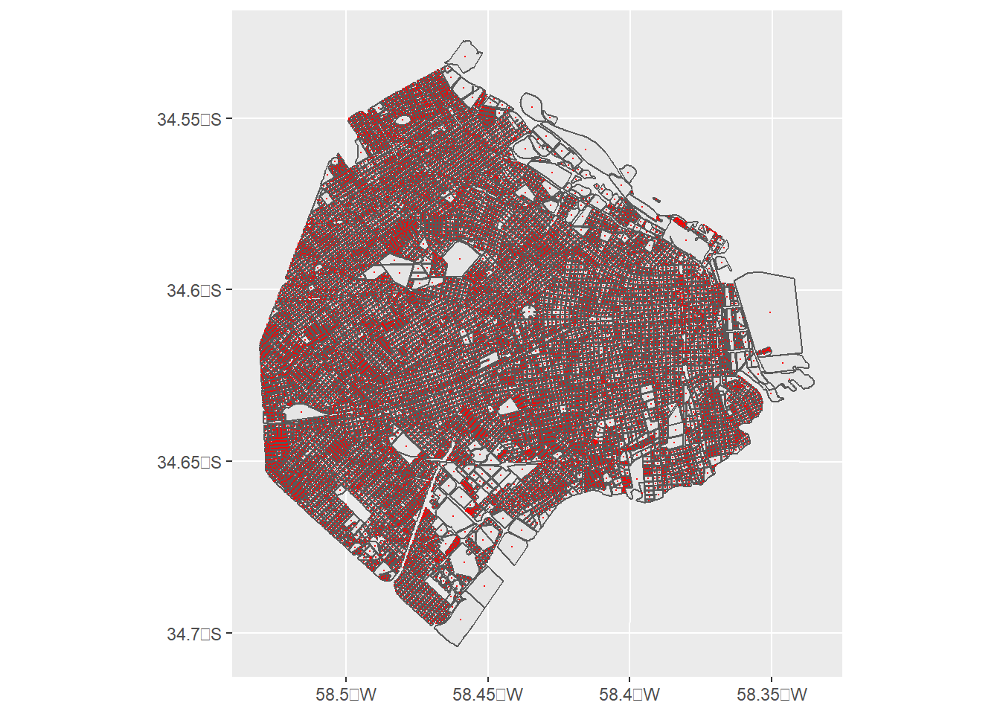
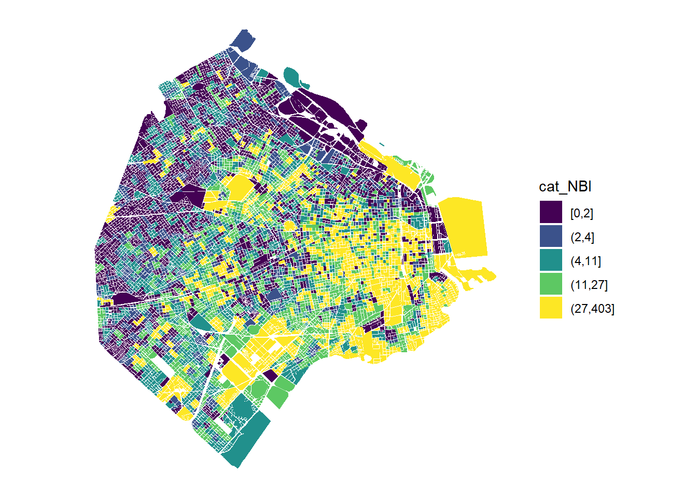
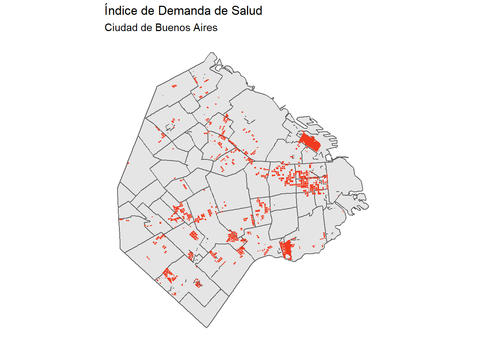

1 Datos espaciales en R
Al terminar este capítulo ustedes van a poder:
- Comprender por qué los datos espaciales son distintos al resto de los datos
- Las dificultades de la representación de esos datos y los estándares utilizados
- Trabajar con datos espaciales en R: su importación, manipulación e introducción a los gráficos
- Identificar los principales tipos de archivos donde suelen compartirse estos datos1.1 ¿Qué es un dato espacial?
Un dato espacial o georreferenciado tiene una característica que lo hace único: posee información sobre su ubicación en la Tierra. No es el único tipo de dato que tiene particularidades, por ejemplo las series de tiempo tienen información sobre un específico período de tiempo donde se registró la información. Esto trae importantes consideraciones al momento de realizar el análisis estadístico, lo que generó el desarrollo de toda una rama de la estadística. No obstante, los datos espaciales no presentan un desafío solo al momento de su análisis, sino que presentan específicidades en la forma de representar su información geográfica y realizar transformaciones en los datos.
1.2 ¿Dónde estamos en la Tierra?
La respuesta a esta pregunta puede ser un poco más compleja de lo que uno piensa, al menos si desea realizar un análisis con esta información. La respuesta más fácil en este momento sería decir: Av. Figueroa Alcorta 7350, Ciudad de Buenos Aires, Argentina. Bien, es un primer paso. Ahora: ¿Cómo calculamos la distancia con respecto a Abbey Road 2, Londres, Inglaterra, donde se encuentra el famoso cruce peatonal de la tapa del disco de los Beatles, Abbey Road? Imposible saberlo solo con esa información.
Si nosotros introdujéramos esos datos en un GPS (o Google Maps), lo que haría es traducir las direcciones que les pasamos a un sistema de grillas que divide al globo en celdas en base a líneas imaginarias en sentido paralelo a los polos (paralelos) y perpendicular a ellos (meridianos). Nuestra dirección quedaría transformada directamente en un vector con dos posiciones: latitud y longitud. Ahora “Av. Figueroa Alcorta 7350, Ciudad de Buenos Aires, Argentina” se convirtió en (-34.714656,-58.785999) y “Abbey Road 2, Londres, Inglaterra” en (51.532068, -0.177305). Las latitudes y longitudes se expresan en grados, así que ya podemos establecer una diferencia cuantitativa entre nuestras dos posiciones ¡Incluso podemos expresarlo en una medida de distancia como metros o kilómetros!
Para esta clase vamos a necesitar varios paquetes, así que los cargamos. Recordemos que si no están instalados hay que usar la función install.packages()
library(tidyverse) # Paquete multiuso
library(sf) # Paquete clave para manipular datos espaciales
library(leaflet) # Uno de los paquetes para Una vez que los cargamos, vamos a crear nuestro dataframe con datos espaciales en base a las coordenadas latitud y longitud que definimos anteriormente:
# Creamos un Data Frame con los datos necesarios
datos <- data.frame(lat = c(-34.714656, 51.532068), long = c(-58.785999,
-0.177305), ubicacion = c("UTDT", "Abbey Road"))
# Lo convertimos a un objeto sf
puntosEspaciales <- st_as_sf(datos, coords = c("long", "lat"),
crs = 4326)
# st_distance() nos permite encontrar la diferencia en la
# unidad que diga el CRS (sistema de coordenadas de
# referencia)
st_distance(puntosEspaciales) # En metros## Units: [m]
## [,1] [,2]
## [1,] 0 11131513
## [2,] 11131513 0## Units: [m]
## [,1] [,2]
## [1,] 0.00 11131.51
## [2,] 11131.51 0.00Según estos cálculos, nos separan aproximadamente 11.131 kms de Abbey Road. Perfecto, pudimos definir nuestra ubicación en la tierra e incluso medir la distancia con otro punto. Hay un parámetro que todavía no introdujimos y que resulta clave cuando lidiamos con datos espaciales: CRS, las siglas de Coordinate Reference System.
Incluso podemos hacer nuestro primer gráfico interactivo de una manera muy rápida
Vayamos paso por paso. En la siguiente sección veremos los distintos modelos de la tierra que usamos para poder representar estas ubicaciones espaciales.
1.3 Coordinate Reference Systems
1.3.1 Elipsoides, sistemas de coordenadas y datums
Representar una ubicación en la superficie de la tierra implica superar diversos obstáculos. Para empezar, la tierra no es una esfera: tiene una forma que suele modelarse como geoide, pero incluso eso es una aproximación. La tierra tiene una forma particular, con diversos accidentes geográficos que la hacen única (y difícil de manipular matemáticamente). Sin embargo, nosotros - y a fines prácticos, todas las personas que trabajan con datos georreferenciados - trabajamos en su versión como geoide, y es en relación a esta modelización de la tierra que se montan los CRS.
Definido el geoide, ese modelo de la forma de la tierra, introducimos el primer componente de los CRS: el elipsoide. El elipsoide es una aproximación al geoide con mejores propiedades matemáticas. Para definir un elipsoide necesitamos un par de parámetros que definen su forma. Una vez que contamos con un elipsoide podemos establecer un sistema de grillas tridimensional, como el de latitud y longitud, que lo segmenta según los ángulos que se forman entre la línea imaginaria paralela a los polos (paralelos) y la línea imaginaria perpendicular a los polos (meridiano) en un determinado punto, en relación al paralelo y meridiano de origen.
Pero ¿cómo relacionamos al elipsoide con el geoide? Si bien el primero es una aproximación del segundo, para establecer un CRS necesitamos saber como se relacionan entre ellos: tenemos que “fijar” el elipsoide al geoide. Esto es lo que hace el datum: define el origen y la orientación de los ejes de coordenadas. Piensen en el datum como la información necesaria para “dibujar” el sistema de coordenadas en el elipsoide
Entonces ya tenemos tres elementos que poseen los CRS:
- Un elipsoide (un modelo de la tierra, en rigor de un geoide)
- Un sistema de coordenadas, que nos permite determinar la posición de un punto en relación a otro en base a líneas imaginarias
- Un datum, que nos permite dibujar ese sistema de coordenadas en el elipsoide de tal manera que represente al ubicaciones específicas en el geoide
Si no quedó del todo claro no se preocupen: es un tema complejo que, en la mayoría de los casos, solo basta con saber que estos conceptos existen y qué significan. El objetivo de esta subsección es dar la definición básica de cada elemento porque probablemente se encuentren con esta información en diversos lugares, pero a fines prácticos suele utilizarse siempre el mismo elipsoide, datum y sistema de coordenadas, o variaciones que no tienen grandes efectos a los fines prácticos de nuestros trabajos. El World Geodetic System (WGS84) es un standard en la industria a nivel mundial, y existen algunas variaciones locales (la más famosa, el North American Datum (NAD83)) que no nos traerán mayores problemas al momento de las transformaciones. Piensen en el CRS como las unidades de peso o de distancia: cada observación que veamos de datos espaciales corresponde a un determinado CRS y no corresponde hacer operaciones entre dos observaciones pertenecientes a distintos CRS.
1.3.2 Proyecciones
Hasta ahora hemos trabajado en la representación de la Tierra en tres dimensiones. Sin embargo, todos los mapas con los que hemos trabajado desde chicos tienen dos dimensiones ¿Cómo transformamos un objeto de tres dimensiones a uno de dos dimensiones? Debemos realizar proyecciones de ese objeto tridimensional que, como veremos en breve, involucra diversos tradeoffs[^1]. Piensen en la proyección como una tarea de traducción: algo se pierde en el proceso.
La proyección hoy en día más famosa es MERCATOR, la proyección que usa, entre otros servicios, Google Maps. Diseñada hace ya varios siglos para la navegación marítima, esta transformación es relativamente buena en lo relativo preservar formas y útil para navegar.
En lo que realmente falla este tipo de proyección es en definir el tamaño de las unidades geógraficas: los países que están cerca de los polos aparentan tener un tamaño mucho más grande del que realmente tienen, mientras que lo inverso sucede con los que están cerca de la línea del ecuador. Tal es así que existe una página web (https://thetruesize.com/) que permite experimentar de manera interactiva con los tamaños de los países en diversas partes de la proyección. En la Figura 1 muestro un ejemplo: Groenlandia, Islandia, Noruega, Suecia, Finlandia y Reino Unido combinadas ocupan aproximadamente el 50% de Brasil (Figura 1).

Figure 1.1: La proyección MERCATOR distorsiona nuestra percepción de los tamaños
La oferta de proyecciones es prácticamente ilimitada. El paquete mapproj en R nos permite transformar el mundo en base a diversas proyecciones, incluyendo algunas que preservan el tamaño de los países. La Figura 2 muestra el mundo desde otra perspectiva: los países del norte son más chicos de lo que parecen en la proyección mercator.

Figure 1.2: La proyección MOLLWEIDE mantiene la representación de los tamaños
Las proyecciones también forman parte de los CRS, que pueden o no tener una proyección. Sea como sea, lo importante de esta sección es haberlos convencido de que importa conocer en que CRS están expresados los datos espaciales. Las transformaciones entre CRS no hace falta conocerlas, sino que el paquete sf lo hará por nosotros. Insisto: lo importante es saber que los datos espaciales SIEMPRE tienen un CRS, aun si no está definido explícitamente en nuestro archivo. Volvamos al ejemplo de los inmuebles de las propiedades de la introducción de este libro para ver un qué formato de archivos tienen los datos espaciales y un ejemplo sobre transformación de CRS.
1.4 Manos a la obra ¿Dónde construir el próximo centro de salud?
Mostremos algunas de las funciones de datos espaciales de R con un problema muy concreto. Pónganse en la piel de una funcionara pública que debe decidir en qué manzana específica de la Ciudad de Buenos Aires debe abrir un nuevo centro de salud. Existen múltiples maneras de lidiar con este problema, pero supongamos por un segundo que esta funcionaria sabe como trabajar con GIS y, específicamente, con R. Antes de escuchar las demandas de los habitantes, prefiere conocer, en base a los datos, en qué manzanas hay una mayor necesidad de construir un nuevo centro de salud. Para eso, va a utilizar distintos conjuntos de datos y herramientas de R.
El objetivo va a ser generar un Índice de Demanda de Salud (IDS) que, para cada manzana de la Ciudad de Buenos Aires, nos va a indicar qué tan necesaria es la construcción de un centro de salud. Este indicador se va a basar en distintas variables, a saber:
- La densidad poblacional en la zona
- La cantidad de hogares con Necesidades Básicas Insatisfechas (NBI)
- La atención preexistente por el sistema de salud
- La distancia con la avenida más cercana
Veamos de dónde podemos conseguir estos datos y cómo podemos leerlos en R
1.4.1 Cargando los datos espaciales
Los datos espaciales, a diferencia de otros tipos de datos, tienen formatos específicos para su almacenamiento. No es el objetivo de este libro introducir a todos los formatos, que son efectivamente muchos. Vamos a leer datos de tres formatos distintos:
Geojson: Se trata de una forma de representación de datos como listas, siguiendo el formato de json, pero adaptado para almacenar datos espaciales. Por default, el sistema de coordenada de referencias es el EPSG número 4325, que utiliza el WGS 84, el standard más utilizado en el mundo. El hecho de que lo guarde por default con este CRS es muy importante: no hace falta información de contexto sobre en qué CRS está, porque solo puede estar en ese-
Shapefiles: Los shapefiles son un formato antiguo para almacenar datos espaciales, y es propiedad de la empresa ESRI (los creadores de ArcGIS). Los shapefiles están siempre compuestos múltiples archivos, cada uno cumpliendo una función. Los datos específicos de las coordenadas se encuentran en un archivo .shp, pero la proyección se encuentra en .proj, y no siempre viene incluida en nuestros datos.
csv: los famosos archivos separados por comas pueden tener información espacial dentro dellos, particularmente cunado se trata de puntos. Suelen especificarse coordenadas como columnas “X” e “Y” o “lat” y “lon”
El GCBA ofrece un dataset espacial con todas las vías de circulación de autos en la Ciudad de Buenos Aires (en este link)[https://data.buenosaires.gob.ar/dataset/calles]. Les va a dar la opción de descargar los datos en shapefiles o geojson. Descarguen el shapefile (estará comprimido en un .zip) y extraiganlo en la carpeta del proyecto.
Para leer a este y al resto de los archivos espaciales - con excepción de csv - podemos usar read_sf(). Acá estoy suponiendo que tienen a todos los archivos de este shapefile dentro de la carpeta callejero-rar/
Si lograron hacerlo, entonces deberían tener un objeto que se llama calles. Lo primero que tenemos que entender cuando leemos datos espaciales es el sistema de coordenadas de referencia en el que están representados. Esto podemos hacerlo con st_crs()
## Coordinate Reference System:
## User input: WGS 84
## wkt:
## GEOGCRS["WGS 84",
## DATUM["World Geodetic System 1984",
## ELLIPSOID["WGS 84",6378137,298.257223563,
## LENGTHUNIT["metre",1]]],
## PRIMEM["Greenwich",0,
## ANGLEUNIT["degree",0.0174532925199433]],
## CS[ellipsoidal,2],
## AXIS["latitude",north,
## ORDER[1],
## ANGLEUNIT["degree",0.0174532925199433]],
## AXIS["longitude",east,
## ORDER[2],
## ANGLEUNIT["degree",0.0174532925199433]],
## ID["EPSG",4326]]En este caso nuestro dataset de calles está expresado en el EPSG 4326 ¿Qué significa esto? El EPSG es un sistema con índices de sistema de coordenadas de referencia. Cada uno de estos números representa a cada combinación de parámetros que determinan un sistema de coordenadas de referencia. Pueden buscar estos números en https://spatialreference.org/. Aquí pueden ver específicamente información sobre el 4326.
Ahora carguemos información sobre la población y la cantidad de hogares con necesidades básicas insatisfechas - una forma de medir la pobreza - por radio censal según el censo 2010, siendo los radios censales la mínima unidad de medida del censo. Nuevamente vamos a poder descargar estos datos desde aquí. Esta vez descarguen la opción de geojson y, nuevamente, guárdenlo en la carpeta de su proyecto
En este caso no necesitamos saber cuál el es el sistema de coordenada de referencias… siempre será el WSG84. Veamos qué variables trae
## Rows: 3,554
## Columns: 9
## $ RADIO_ID <chr> "1_1_1", "1_12_1", "1_12_10", "1_12_11", "1_12_2", "1_12_3", "1_12_4", "1_12_5", "1_12_...
## $ BARRIO <chr> "RETIRO", "SAN NICOLAS", "SAN NICOLAS", "SAN NICOLAS", "SAN NICOLAS", "SAN NICOLAS", "S...
## $ COMUNA <chr> "1", "1", "1", "1", "1", "1", "1", "1", "1", "1", "1", "1", "1", "1", "1", "1", "1", "1...
## $ POBLACION <dbl> 336, 341, 296, 528, 229, 723, 393, 600, 472, 786, 329, 1356, 586, 725, 358, 426, 614, 2...
## $ VIVIENDAS <dbl> 82, 365, 629, 375, 445, 744, 341, 505, 504, 546, 275, 895, 404, 641, 266, 252, 641, 382...
## $ HOGARES <dbl> 65, 116, 101, 136, 129, 314, 209, 275, 202, 347, 129, 342, 163, 136, 104, 157, 235, 142...
## $ HOGARES_NBI <dbl> 19, 25, 1, 7, 16, 104, 110, 32, 49, 89, 15, 57, 1, 1, 2, 2, 5, 1, 74, 3, 31, 43, 74, 48...
## $ AREA_KM2 <dbl> 1.79899705, 0.01856469, 0.04438025, 0.36634000, 0.01836301, 0.03672540, 0.01671179, 0.0...
## $ geometry <MULTIPOLYGON [°]> MULTIPOLYGON (((-58.37189 -..., MULTIPOLYGON (((-58.38593 -..., MULTIPOLYG...¿Ven esa columna geometry? Es donde están almacenados nuestros datos espaciales, en este caso son polígonos. Es una forma muy prolija de guardar la información espacial, al mismo tiempo que el resto de las variables pueden trabajarse como si fuera un data.frame normal. Si están atentos y atentas se van a dar cuenta de que no tenemos una medida de densidad… todavía, ya lo vamos a solucionar.
Finalmente, nos falta información sobre la oferta actual de cobertura de salud, para esto vamos a usar solamente a los hospitales de la Ciudad de Buenos Aires, siendo conscientes de que existen otras formas de brindar atención de salud, como los Centros de Salud y Acción Comunitaria (CeSACs).
El dataset de hospitales se encuentra en un csv al que le hice pequeñas modificaciones y pueden descargar haciendo click acá
Todavía esto no es un dato espacial… al menos no para R: para eso tenemos que convertirlo en un objeto SF, que tenga a las coordenadas en la columna geometry. Veamos qué columnas tiene
## Rows: 36
## Columns: 33
## $ long <dbl> -58.37755, -58.41207, -58.40273, -58.38516, -58.39131, -58.43494, -58.37584...
## $ lat <dbl> -34.62885, -34.59419, -34.58453, -34.63940, -34.63415, -34.60847, -34.63021...
## $ nombre <chr> "HOSPITAL GENERAL DE NIÑOS PEDRO DE ELIZALDE", "HOSPITAL GENERAL DE NIÑOS R...
## $ nom_map <chr> "HOSP. DE ELIZALDE", "HOSP. GUTIERREZ", "HOSP. ODONTOLOGICO CARRILLO", "HOS...
## $ objeto <chr> "HOSPITAL", "HOSPITAL", "HOSPITAL", "HOSPITAL", "HOSPITAL", "HOSPITAL", "HO...
## $ calle_nombre <chr> "MANUEL A. MONTES DE OCA", "GALLO", "SANCHEZ DE BUSTAMANTE", "BRANDSEN", "C...
## $ calle_altura <dbl> 40, 1330, 2529, 2570, 2061, 4821, 849, 315, 375, 1795, 955, 2151, 4151, 15,...
## $ calle_altura_1 <chr> "MANUEL A. MONTES DE OCA 40", "GALLO 1330", "SANCHEZ DE BUSTAMANTE 2529", "...
## $ dom_geo <chr> "40 MONTES DE OCA, MANUEL AV.", "1330 GALLO", "2529 SANCHEZ DE BUSTAMANTE",...
## $ telefono <chr> "4307-5842 / 5844", "4962-9247 / 9248 / 9280", "4805-5521 / 7533", "4301-36...
## $ guardia <chr> "4307-5442 / 4300-1700", "4962-9232", "4805-6407", "4301-4522", "4306-4641 ...
## $ fax <chr> "4302-7400", "4962-3762", "4805-7533", "4303-3655/59", "4306-3013", "4983-7...
## $ web <chr> "www.elizalde.gov.ar", "www.guti.gov.ar", NA, "www.moyano.org.ar", NA, NA, ...
## $ tipo <chr> "Hospital de niños", "Hospital de niños", "Hospital especializado", "Hospit...
## $ tipo_espec <chr> "PEDIATRIA", "PEDIATRIA", "ODONTOLOGIA", "SALUD MENTAL", "ENF. APAR. DIGEST...
## $ mod_at_1 <chr> "AT. AMB./INTERNACION", "AT. AMB./INTERNACION", "AT. AMBULATORIA", "AT. AMB...
## $ mod_at_2 <chr> "DIAG./TRATAM.", "DIAG./TRATAM.", "DIAG./TRATAM.", "DIAG./TRATAM.", "DIAG./...
## $ depend_adm <chr> "Ministerio de Salud GCBA", "Ministerio de Salud GCBA", "Ministerio de Salu...
## $ director <chr> "Dr. Javier Indart", "Dra. María Cristina Galoppo", "Dra. Susana Rita Lisan...
## $ dom_norma <chr> "MONTES DE OCA, MANUEL AV. 40", "GALLO 1330", "SANCHEZ DE BUSTAMANTE 2529",...
## $ calle_altura_2 <dbl> 40, 1330, 2529, 2570, 2061, 4821, 849, 315, 375, 1795, 955, 2151, 4151, 15,...
## $ calle_altura_3 <chr> "MANUEL A. MONTES DE OCA 40", "GALLO 1330", "SANCHEZ DE BUSTAMANTE 2529", "...
## $ barrio <chr> "Barracas", "Recoleta", "Recoleta", "Barracas", "Parque Patricios", "Caball...
## $ comuna <chr> "Comuna 4", "Comuna 2", "Comuna 2", "Comuna 4", "Comuna 4", "Comuna 6", "Co...
## $ codigo_postal <dbl> 1270, 1425, 1425, 1287, 1264, 1405, 1272, 1275, 1275, 1169, 1428, 1246, 141...
## $ codigo_postal_argentino <chr> "C1270AAN", "C1425EFD", "C1425DUY", "C1287ABJ", "C1264AAA", "C1405DCD", "C1...
## $ camas_medicina <dbl> 7.336986, 169.665753, NA, 865.950685, 38.893151, NA, 10.575342, NA, 678.027...
## $ camas_cirugía <dbl> NA, 119.347945, NA, 32.000000, 33.079452, NA, NA, NA, 9.972603, NA, 26.4054...
## $ camas_pediatría <dbl> NA, NA, NA, NA, NA, NA, NA, 64.00000, NA, NA, NA, 149.89041, NA, NA, NA, 18...
## $ camas_tocoginecología <dbl> NA, NA, NA, NA, NA, NA, NA, NA, NA, NA, NA, 96.57260, NA, NA, NA, NA, NA, N...
## $ camas_urgencia <dbl> NA, 24.619178, NA, NA, 6.082192, NA, 7.652055, NA, NA, NA, NA, 2.002740, NA...
## $ camas_otra <dbl> 210.92055, NA, NA, NA, NA, NA, NA, NA, NA, NA, NA, NA, NA, NA, NA, NA, NA, ...
## $ camas_totales <dbl> 218.25753, 313.63288, NA, 897.95068, 78.05479, NA, 18.22740, 64.00000, 688....Entre todas las variables, long y lat tienen las variables espaciales. Podemos convertir este data.frame en un objeto sf, es decir espacial, de la siguiente manera:
Nos falta el último de nuestros datos: las manzanas. Pueden descargar el geojson de acá
Ahora sí ya podemos aplicar las distintas herramientas de análisis espacial para elegir las mejores ubicaciones para el nuevo centro de salud.
1.4.2 Detectando la cobertura actual.
Una de las variables que dijimos que ibamos a tomar para detectar un espacio para un nuevo centro de salud iba a ser que la zona no estuviera atendida por un hospital. Existen distintas maneras de cubrir esta atención existente, pero vamos a usar una herramienta en particular: st_buffer(). Lo que hace esta función de sf es generar un polígono a una distancia fija desde cualquiera de los puntos de nuestros objetos espaciales. En el caso de puntos - como nuestros hospitales - esto significa un círculo del radio que nosotros querramos.
Una recomendación cuando trabajemos con funciones que requieren medir distancias y relaciones entre distintos objetos espaciales es que trabajemos con CRS que se encuentren proyectados en dos dimensiones, en lugar del ESPG 4326 que se encuentra no proyectado. Usemos la proyección oficial del GCBA, cuya definición podemos encontrar acá https://spatialreference.org/ref/sr-org/8333/.
Vamos a usar la función st_transform(), que es la que nos permite transformar entre sistemas de coordenadas de referncia. No vamos a usar los códigos de EPSG, sino la representación proj4string, que la pueden ver en el link que puse anteriormente.
hospitales <- st_transform(hospitales, crs="+proj=tmerc +lat_0=-34.6297166 +lon_0=-58.4627 +k=1 +x_0=100000 +y_0=100000 +ellps=intl +units=m +no_defs")Si usan st_crs(hospitales) van a ver que es distinto ¿Ven la parte de +units=m? Bueno, eso implica que ahora todo lo que hagamos en términos espaciales será tomado en metros, por lo cual podemos encontrar círculos a una distancia fija, por ejemplo, 1000 metros, de cada hospital
Como alguno de los circulos se van a solapar, mejor juntemos todo en un gran polígono que diga que en esa zona hay cobertura, con herramientas de tidyverse
Dejemos por este dataset cargado en nuestra sesión de R por un rato, ya vamos a volver a él
1.4.3 Distancia contra la avenida más cercana
Definitivamente es importante tener una buena conexión con la red de transporte para poder mover mejor a los eventuales pacientes. Teniendo nuestras calles, podemos seleccionar solo las avenidas y despues usar st_distance() para estimar la distancia entre cada una de nuestras manzanas y las avenidas.
Antes de usar las avenidas, lo que vamos a hacer es quedarnos con los centroides de las manzanas. Los centroides son el punto central dentro de un polígono. Hacemos esto especialmente por las manzanas que son muy grandes, para tener un “promedio” en lugar de uno solo de sus puntos externos. Es muy fácil tener los centroides, utlizando st_centroid(). Antes de hacerlo, vamos a convertir a manzanas al crs de hospitales, es decir el de la ciudad de buenos aires:
Ahora vamosa extraer los centroides de cada una de las manzanas y hacemos un gráfico para verlo en detalle:
manzanasCentroides <- st_centroid(manzanas)
ggplot() +
geom_sf(data = manzanas) +
geom_sf(data = manzanasCentroides,color="red", size= 0.001)
Si no se distinguen los puntos en este gráfico, hagánlo en su computadoras y van a poder cambiar el zoom para ver cómo cada punto está en el centro de cada manzana. Ahora midamos la distancia entre cada uno de estos puntos y todas las avenidas, pero tienen que estar en el mismo Sistema de Coordenadas de Referencia:
Ahora sí, solo hay que esperar un poco, puede tardar unos minutos:
Lo que acaba de hacer es computar la distancia, en metros, entre cada uno de los centroides y las avenidas, con dim podemos ver que efectivamente esto es lo que sucedió
# 12.520 filas (centroides de manzanas) y 6,758 columnas (tramos de avenidas)
dim(distanciaAvenidas)## [1] 12520 6758Sin embargo, nuestro objetivo es tener la distancia mínima por lo cual podemos hacer uso de apply. Es una función muy poderosa que recorre nuestra matriz en filas o culmnas haciendo algo que queremos. Por ejemplo, podemos recorrer todas las filas y tomar el valor mínimo, con lo cual nos quedaríamos con el valor mínimo para cada uno de los centroides de manzanas.
# 1 significa filas, 2 columnas. functon(x) min(x) significa que para cada fila devuelva el valor mínimo
avenidaMasCercana <- apply(distanciaAvenidas,1,function(x) min(x))
# Rendondeamos
avenidaMasCercana <- round(avenidaMasCercana,0)Agregamos esta distancia a cada una de las manzanas
1.4.4 Incorporando el resto de las variables
Ahora ya podemos agregar a los centroides, y luego a las manzanas, la información que nos falta para la construcción del índice. Para empezar, podemos hacer lo más fácil, que es marcar si el centroide está dentro de los radios de cobertura que dijimos anteriormente. Para esto, usamos st_intersects(), que nos dice en cuáles de los casos en los cuales el
Igual que el left_join(), cuando no encuentra ningun matcheo entre las unidades devuelve NA, por lo que todos los valores que están en cobertura como NA en rigor no están cubiertos por la oferta de hospitales actual. Dejamos eso en claro:
manzanasCentroides <- manzanasCentroides %>% mutate(cobertura=ifelse(is.na(cobertura),FALSE,cobertura))Ahora tenemos que hacer algo muy similar con los datos del censo 2010, que lo tenemos en el objeto radiosCensales.
radiosCensales <- radiosCensales %>% mutate(densidadPob=POBLACION/AREA_KM2)
radiosCensales <- radiosCensales %>% st_transform(radiosCensales,crs=st_crs(hospitales))
manzanasCentroides <- st_join(manzanasCentroides,radiosCensales)Nos queda agregar toda esta información a los polígonos de las manzanas y ya podemos ponernos a construir, finalmente,nuestro índice
1.4.5 Creando nuestro índice de demanda de salud
Nuestro índice de demanda de salud va a estar compuesto por un promedio ponderado de variables que construimos, pero anteriormente deberíamos normalizarlas. Lo que vamos a hacer es ponerle un valor del 1 al 5 si está entre el 0%-20%, 20%-40%, 40%-60%, 60%-80% u 80%-100% de esa variable. Esto lo podemos hacer fácilmente con la función quantile(), que calcula justamente estos quiebres, veamos:
# Queremos que nos muestre en que porcentaje de estos está cada observación...
quiebres <- c(0,0.2,0.4,0.6,0.8,1)
manzanas <- manzanas %>%
mutate(cat_densidad=cut(densidadPob,breaks = quantile(densidadPob,quiebres,na.rm = TRUE ),include.lowest = TRUE),
cat_NBI=cut(HOGARES_NBI,breaks = quantile(HOGARES_NBI,quiebres,na.rm = TRUE ),include.lowest = TRUE),
cat_distanciaAv=cut(-distanciaAvenida,breaks = quantile(-distanciaAvenida,quiebres,na.rm = TRUE ),include.lowest = TRUE))Vamos parte por parte. La función cut() corta a una variable númerica por los cortes que nosotros le indiquemos en el parámetro breaks. Por otro lado, la función quantile() nos devuelve los valores de una variable numérica que alcanza a un determinado porcentaje cuando se ordena de mayor a menor (es decir, calcula el percentil). Como buscamos los puntos que acumulan 0%, 20%, 40%, 60%, 80% y 100%, por los valores que le ponemos al vector quiebres, entonces nos va a devolver esos valores. na.rm=TRUE dentro de quantile() es para que ignore los casos donde hay NA en la variable, mientras que include.lowest = TRUE es para que cut tome al primer valor, 0, y no lo excluya de la nueva variable categórica.
Además, ponemos -distanciaAvenida porque es un truco para que nos quede como valor más alto (5) cuando la distancia es menor a la avenida y más bajo (1) cuando la distancia es mayor a la avenida.
Si todavía no quedó del todo claro, un gráfico habla más que mil palabras
ggplot() +
geom_sf(data=manzanas %>% filter(!is.na(cat_NBI)) ,aes(fill=cat_NBI), color=NA) +
scale_fill_viridis_d() +
theme_minimal() +
coord_sf(datum=NA)
Bien, ahora una última vuelta de tuerca: podemos convertir estas categorías a números con la función as.numeric(), y estarán ordenados de 1, menor valor, a 5, mayor valor ¡Exactamente lo que queríamos! Esto es por cómo funcionan los factores en R
# En el caso de cobertura convertira 0 cuando era FALSE y 1 cuando era TRUE
manzanas <- manzanas %>%
mutate(cat_densidad=as.numeric(cat_densidad),
cat_NBI=as.numeric(cat_NBI),
cat_distanciaAv=as.numeric(cat_distanciaAv),
cat_cobertura=as.numeric(!cobertura))Ya podemos crear nuestro índice con las ponderaciones que queramos. Usemos un 10% para la densidad, un 30% para los NBI, un 10% para la distancia con la avenida más cercana y un 50% sobre si en el lugar falta o no cobertura.
manzanas <- manzanas %>%
mutate(IDS=cat_densidad*0.1+cat_NBI*0.3+cat_distanciaAv*0.1+cat_cobertura*0.5,
IDS=ifelse(IDS>quantile(IDS,probs = 0.9,na.rm = TRUE),TRUE,FALSE))Hagamos nuestro gráfico:
# Podemos agrupar a los radioscensales por barrio para que nos queden los polígonos de los barrios.
# Tambien es posible bajarlos directamente desde la página del GCBA
barrios <- radiosCensales %>% group_by(BARRIO) %>% summarise(n())## `summarise()` ungrouping output (override with `.groups` argument)ggplot() +
geom_sf(data=barrios) +
geom_sf(data=manzanas %>% filter(!is.na(IDS)) ,aes(fill=IDS), color=NA) +
scale_fill_manual(values = c(NA,"#f03b20")) +
guides(fill=FALSE) +
theme_minimal() +
coord_sf(datum=NA) +
labs(title="Índice de Demanda de Salud",
subtitle="Ciudad de Buenos Aires")
1.5 Ejercicio
La Ciudad de Buenos Aires cuenta con otras alternativas a los hospitales, por ejemplo los CESAC. Descargá los datos de los CESAC y agregalos al gráfico donde se encuentran las áreas más acuciantes del IDS ¿Coinciden las zonas? ¿No? ¿Dónde construirían el próximo CESAC, ahora que saben dónde están emplazados los actuales?